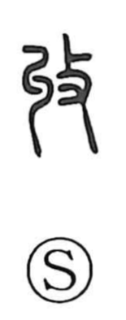

収

Uncategorized
Kun: osameru, osamaru | On: shuu
to collect ・ to receive ・ to store ・ to harvest ・ to capture
Explanation
Shirakawa takes 収 in its original form 收 as a compound: the left element, glossed in the Shuowen as “to entwine and coil,” evokes strands twisted together like a rope, while 攴, “to strike,” shows the action applied to it. The scene is of beating a newly twisted rope to harden and tighten it so it holds firmly. From this comes the core sense of gathering in and making secure—putting things together, bringing them under control, and stowing them away. Hence 収 means to put away or store, to strengthen and settle disorder (as in 収拾), and by extension to take into custody or capture (as in 収監).